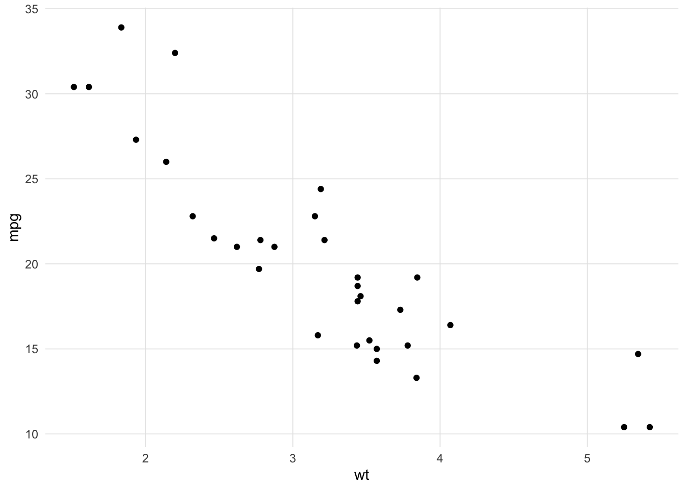
5 Maximum Likelihood Estimation
Maximum Likelihood Estimation (MLE) is an important procedure for estimating parameters in statistical models. It is often first encountered when modeling a dichotomous outcome variable vis-à-vis logistic regression. However, it is the backbone of generalized linear models (GLM) which allow for error distribution models other than the normal distribution. Most introductions to MLE rely on mathematical notation that for many students is opaque and hinders learning how this method works. The document outlines an approach to understanding MLE that relies on visualizations and mathematical notation is only used when necessary.
We will begin with a typical bivariate regression using the mtcars data set where we wish to predict mpg (miles per gallon) from wt (weight in 1,000 lbs). Figure 1 is a scatter plot showing the relationship between these two variables.
Our goal is to estimate
\[Y_{mpg} = \beta_{wt} X + e\] where \(\beta_{wt}\) is the slope and \(e\) is the intercept.
5.1 Ordinary Least Squares
With ordinary least squares (OLS) regression our goal is to minimize the residual sum of squares (RSS):
\[RSS=\sum^{n}_{i=1} \left( y_{i}-f(x_{i})\right)^{2}\]
where \(y_i\) is the variable to be predicted, \(f(x_i)\) is the predicted value of \(y_i\), and \(n\) is the sample size. Figure 2 superimposes the residuals on the scatter plot. By squaring the length of each of those lines we accomplish two things: 1) we make all the values to be summed positive (i.e. a line that fits all the data perfectly will have a RSS = 0) and 2) points that fall further from the regression line contribute more (geometrically more) to the RSS then points close to the regression line.
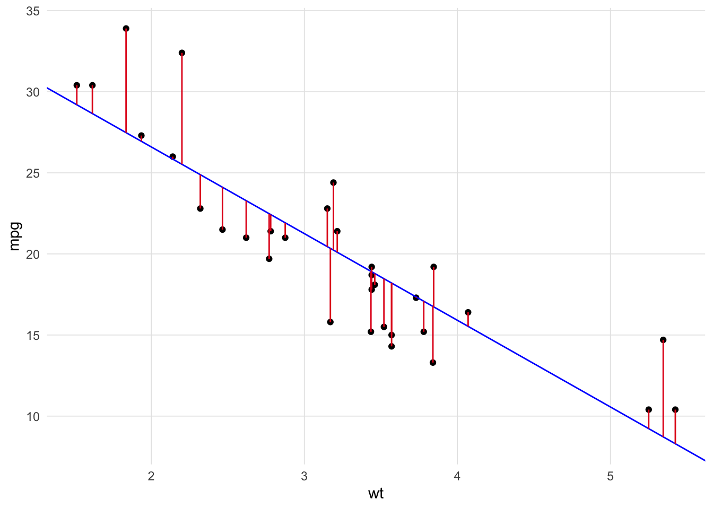
The basic properties we know about regression are:
- The correlation measures the strength of the relationship between x and y (see this shiny app for an excellent visual overview of correlations).
- The correlation ranges between -1 and 1.
- The mean of x and y must fall on the line.
- The slope of a line is defined as the change in y over the change in x (\(\frac{\Delta y}{\Delta x}\)). For regression use the ration of the standard deviations such that the correlation is defined as \(m = r \frac{s_y}{s_x}\) where \(m\) is the slope, \(r\) is the correlation, and \(s\) is the sample standard deviation.
We can easily calculate the RSS for various correlations (\(r\)) ranging between -1 and 1. Figure 3 visualizes the RSS.
y <- mtcars$mpg
x <- mtcars$wt
mean.y <- mean(y)
mean.x <- mean(x)
sd.y <- sd(y)
sd.x <- sd(x)
ols <- tibble(
r = seq(-1, 1, by = 0.025), # Correlation
m = r * (sd.y / sd.x), # Slope
b = mean.y - m * mean.x # Intercept
) %>% rowwise() %>%
mutate(ss = sum((y - (m * x + b))^2)) %>% # Sum of squares residuals
as.data.frame()
datatable(ols) %>% formatRound(columns = names(ols), digits=3)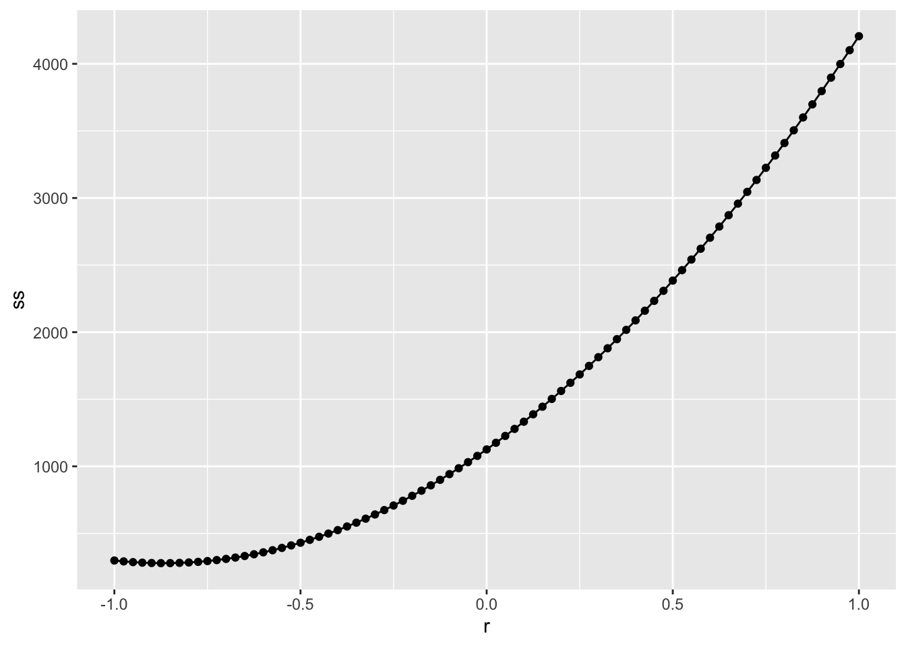
The correlation with the correlation the resulted in the smallest RSS is -0.875.
ols %>% dplyr::filter(ss == min(ss)) # Select the row with the smallest sum of squares residuals r m b ss
1 -0.875 -5.389687 37.4306 278.3826Calculating the correlation in R gives us -0.8676594 and the slope is -5.3444716 which is close to our estimate here. We could get a more accurate result if we tried smaller steps in the correlation (see the by parameter in the seq function above).
5.2 Minimizing RSS Algorithmically
This approach works well here because the correlation is bounded between -1 and 1 and we can easily calculate the RSS for a bunch of possible correlations. However, there are more efficient ways of finding the correlation that minimizes the RSS than trying correlations equally distributed across the possible range. For example, consider the following simple algorithm:
- Calculate the RSS for \(r = 0\).
- Calculate the RSS for \(r = 0.5\) If \(RSS_{0.5} < RSS_{0}\) then calculate the RSS with \(r = 0.75\), else calculate the RSS with \(r = -0.5%\)
We can repeat this procedure, essentially halving the distance in each iteration until we find a sufficiently small RSS. This process is, in essence, the idea of numerical optimization procedures. In R, the optim function implements the Nedler-Mead (Nedler & Mead, 1965) and Limited Memory BFGS (Byrd et al, 1995) methods for optimizing a set of parameters. The former is the default but we will use the latter throughout this document since it allows for specifying bounds for certain parameters (e.g. only consider positive values). The details of how the algorithm works is beyond the scope of this article (see this interactive tutoral by Ben Frederickson for a good introduction), instead we will focus on what the algorithm does. To begin, we must define a function that calculates a metric for which the optimizer is going to minimize (or maximize). Let’s start with RSS:
residual_sum_squares <- function(parameters, predictor, outcome) {
a <- parameters[1] # Intercept
b <- parameters[2] # beta coefficient
predicted <- a + b * predictor
residuals <- outcome - predicted
ss <- sum(residuals^2)
return(ss)
}The parameters is a vector of the parameters the algorithm is going to minimize (or maximize). Here, these will be the slope and intercept. The predictor and outcome are parameters passed through from the ... parameter on the optim function and are necessary for us to calculate the RSS. We can now get the RSS for any set of parameters.
residual_sum_squares(c(37, -5), mtcars$wt, mtcars$mpg)[1] 303.5247Small Digression In order to explore each step of the algorithm, we need to wrap the optim function to capture the parameters and output of the function. The optim_save1 function will add two elements to the returned list: iterations is the raw list of the parameters and output saved and iterations_df is a data.frame containing the same data.
optim_save <- function(par, fn, ...) {
iterations <- list()
wrap_fun <- function(parameters, ...) {
n <- length(iterations)
result <- fn(parameters, ...)
iterations[[n + 1]] <<- c(parameters, result)
return(result)
}
optim_out <- stats::optim(par, wrap_fun, ...)
optim_out$iterations <- iterations
optim_out$iterations_df <- as.data.frame(do.call(rbind, iterations))
names(optim_out$iterations_df) <- c(paste0('Param', 1:length(par)), 'Result')
optim_out$iterations_df$Iteration <- 1:nrow(optim_out$iterations_df)
return(optim_out)
}We can now call the optim_save function with our residual_sum_squares function. We initialize the algorithm with two random values for the intercept and slope, respectively. Note that we are using Broyden, Fletcher, Goldfarb, and Shanno optimization method which allows for the specification of bounds on the parameter estimates which we will use later.
optim.rss <- optim_save(
par = runif(2),
fn = residual_sum_squares,
method = "L-BFGS-B",
predictor = mtcars$wt,
outcome = mtcars$mpg
)The par parameter provides the final parameter estimates.
optim.rss$par[1] 37.285116 -5.344469We can see that the parameters are accurate to at least four decimal places to the OLS method used by the lm function.
lm.out <- lm(mpg ~ wt, data = mtcars)
lm.out$coefficients(Intercept) wt
37.285126 -5.344472 It took the optim function 65 iterations to find the optimal set of parameters that minimized the RSS. Figure 4 shows the value of the parameters (i.e. intercept and slope) and the RSS for each iteration.
df <- optim.rss$iterations_df
names(df) <- c('Intercept', 'Slope', 'ResidualSumSquares', 'Iteration')
df %>% melt(id.var = 'Iteration') %>%
ggplot(aes(x = Iteration, y = value, color = variable)) +
geom_point(size = 1) + geom_path() +
facet_wrap(~ variable, scales = "free_y", ncol = 1) +
xlab('Iteration') + ylab('') + theme(legend.position = 'none')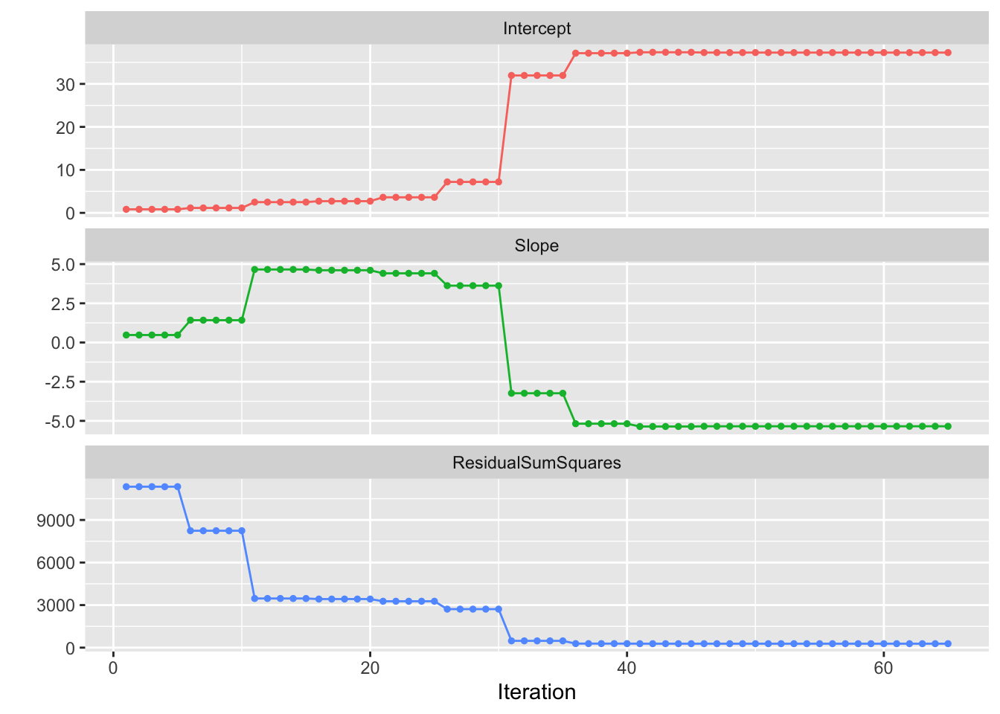
5.3 Likelihood
Now that we have laid the groundwork for finding parameters algorithmically, we need to introduce another way of evaluating how well parameters fit the data, namely the likelihood. First, let’s revisit what we are doing in OLS. Figure 5 is a scatter plot of our observations, the OLS regression line in blue, and one observation highlighted in red with the residual as a red line. With OLS, we square the residual for every observation, thereby making all values positive, and summing them. There is, however, another way of estimating fit that doesn’t rely on the residuals.
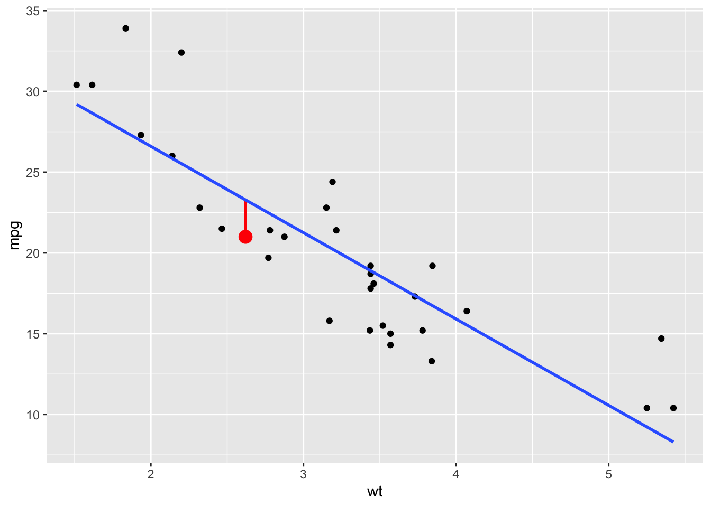
We often think of probabilities as the areas under a fixed distribution. For example, the first car in mtcars is Mazda RX4 with an average miles per gallon of 21 and weighs 2620lbs. The probability of a car with a miles per gallon less than Mazda RX4 given the data we have in mtcars is 0.5599667 and is depicted in Figure 6.
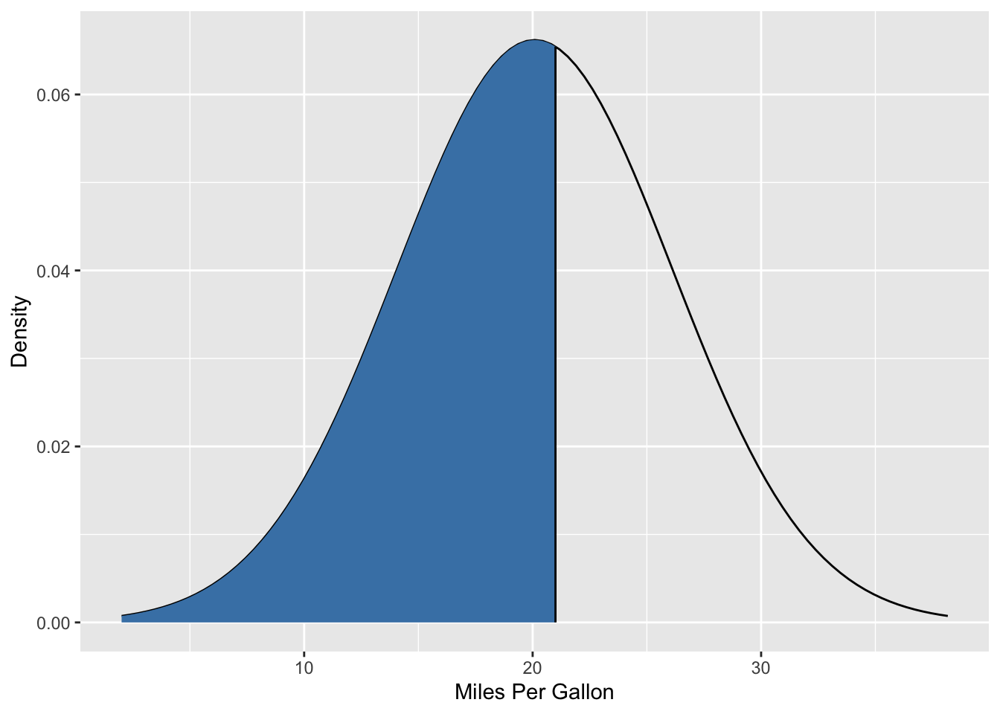
For probabilities, we are working with a fixed distribution, that is:
\[pr(data\ |\ distribution)\] The likelihood are the y-axis values (i.e. density) for fixed data points with distributions that can move, that is:
\[L(distribution\ |\ data)\] The likelihood is the height of the density function. Figure 7 depicts two likelihood for two observations. The mean of each distribution is equal to \(\beta_{wt} X + e\) and the intercept (also known as the error term) defines the standard deviation of the distribution.
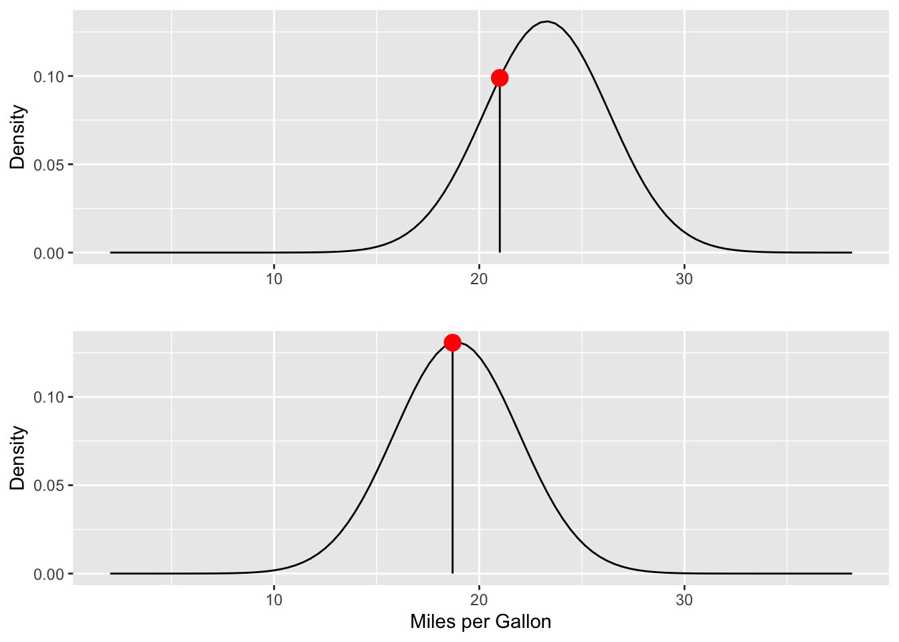
We can then calculate the likelihood for each observation in our data. Unlike OLS, we now want to maximize the sum of these values. Also, we are going to use the log of the likelihood so we can add them instead of multiplying. We can now define our log likelihood function:
loglikelihood <- function(parameters, predictor, outcome) {
a <- parameters[1] # intercept
b <- parameters[2] # slope / beta coefficient
sigma <- parameters[3] # error
ll.vec <- dnorm(outcome, a + b * predictor, sigma, log = TRUE)
return(sum(ll.vec))
}Note that we have to estimate a third parameter, sigma, which is the error term and defines the standard deviation for the normal distribution for estimating the likelihood. This is connected to the distribution of the residuals as we will see later. We can now calculate the log-likelihood for any combination of parameters.
loglikelihood(c(37, -5, sd(mtcars$mpg)),
predictor = mtcars$wt,
outcome = mtcars$mpg)[1] -91.063745.4 Maximum Likelihood Estimation
We can now use the optim_save function to find the parameters that maximize the log-likelihood. Note two important parameter changes:
- We are specifying the
lowerparameter so that the algorithm will not try negative values for sigma since the variance cannot be negative. - The value for the
controlparameter indicates that we wish to maximize the values instead of minimizing (which is the default).
optim.ll <- optim_save(
runif(3), # Random initial values
loglikelihood, # Log-likelihood function
lower = c(-Inf, -Inf, 1.e-5), # The lower bounds for the values, note sigma (error), cannot be negative
method = "L-BFGS-B",
control = list(fnscale = -1), # Indicates that the maximum is desired rather than the minimum
predictor = mtcars$wt,
outcome = mtcars$mpg
)We can get our results and compare them to the results of the lm function and find that they match to at least four decimal places.
optim.ll$par[1:2][1] 37.285114 -5.344468lm.out$coefficients(Intercept) wt
37.285126 -5.344472 Figure 8 shows the estimated regression line for each iteration of the optimization procedure (on the left; OLS regression line in blue; MLE regression line in black) with the estimated parameters and log-likelihood for all iterations on the left.
Figure 9 superimposes the normal distribution from which the log-likelihood is determined. The distribution is centered on \(\hat{y}\). The height of the distribution (i.e. density) at \(y\) is the likelihood. We take the log of this value to get the log-likelihood. These log-likelihoods are calculated for each observation and summed. Maximum likelihood estimation is attempting to find the parameters (i.e. slope and intercept) that maximizes the log-likelihood.
VisualStats::plot_likelihood(x = mtcars$wt,
y = mtcars$mpg,
pt = 2,
intercept = optim.ll$par[1],
slope = optim.ll$par[2],
sigma = optim.ll$par[3])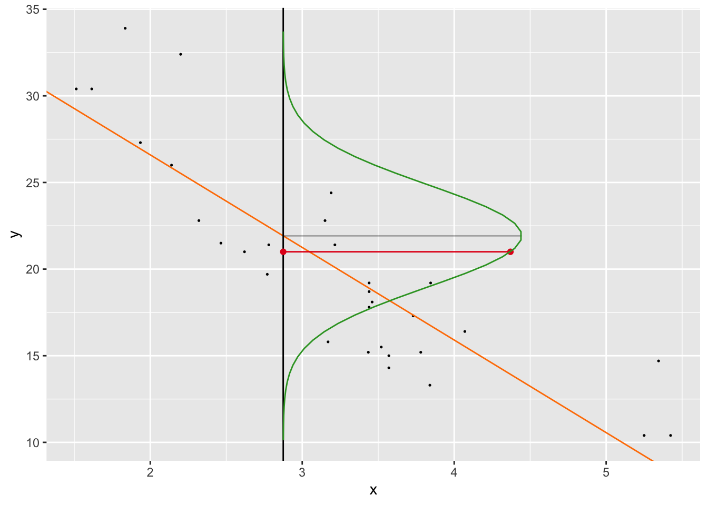
Figure 10 depicts the likelihoods for the first 16 observations.
df <- optim.ll$iterations_df
names(df) <- c('Intercept', 'Slope', 'Sigma', 'LogLikelihood', 'Iteration')
tmp <- df %>% dplyr::filter(Iteration == nrow(df))
plots <- list()
nplots <- 16 #nrow(mtcars)
for(i in 1:min(nplots, nrow(mtcars))) {
a <- tmp[1,]$Intercept
b <- tmp[1,]$Slope
sigma <- tmp[1,]$Sigma
predictor <- mtcars$wt[i]
predicted.out <- a + b * predictor
outcome <- mtcars$mpg[i]
d <- dnorm(outcome, predicted.out, sigma)
plots[[i]] <- ggplot() +
stat_function(fun = dnorm,
n = 101,
args = list(mean = predicted.out, sd = sigma)) +
annotate(geom = 'segment', x = outcome, y = 0, xend = outcome, yend = d, color = 'red') +
annotate(geom = 'point', x = outcome, y = d, color = 'red', size = 2) +
xlim(c(min(mtcars$mpg, predicted.out - 3 * sigma),
max(mtcars$mpg, predicted.out + 3 * sigma))) +
ylim(c(0, .2)) +
ylab('') + xlab(row.names(mtcars)[i])
}
plot_grid(plotlist = plots)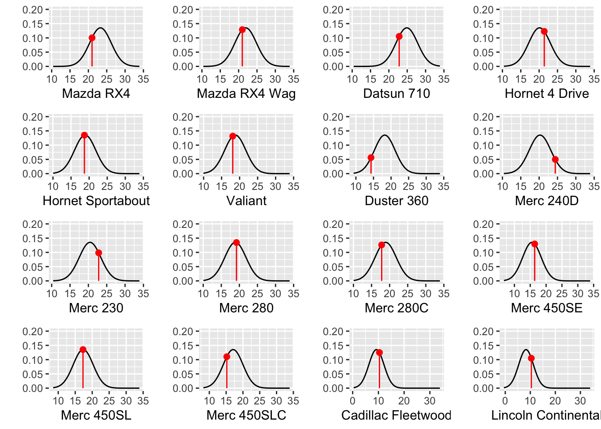
With MLE we need to estimate what is often referred to as the error term, or as we saw above is the standard deviation of the normal distribution from which we are estimating the likelihood from. In Figure 9 notice that the normal distribution id drawn vertically. This is because the likelihood is estimated from the error, or the residuals. In OLS we often report the root-mean-square deviation (RMSD, or root-mean-square error, RMSE). The RMSD is the standard deviation of the residuals:
\[RMSD\ =\ \sqrt{\frac{\sum^{N}_{i=1} (x_{i}-\hat{x_{i}} )^{2}}{N} }\] Where \(i\) is the observation, \(x_i\) is the observed value, \(\hat{x_i}\) is the estimated (predicted) value, and \(N\) is the sample size. Below, we see that the numerical optimizer matches the RMSD within a rounding error.
optim.ll$par[3][1] 2.949164sqrt(sum(resid(lm.out)^2) / nrow(mtcars))[1] 2.9491635.5 Generalized Linear Models
Generalized linear models (GLM) are a generalization of OLS that allows for the response variables (i.e. dependent variables) to have an error distribution that is not distributed normally. All generalized linear models have the following three characteristics:
- A probability distribution describing the outcome variable .
- A linear model
\(\eta = \beta_0+\beta_1 X_1 + \cdots + \beta_n X_n\). - A link function that relates the linear model to the parameter of the outcome distribution
\(g(p) = \eta\) or \(p = g^{-1}(\eta)\).
We can estimate GLMs using MLE as described above. What will change is the log-likelihood function.
5.6 Logistic Regression
Logistic regression is a GLM used to model a binary categorical variable using numerical and categorical predictors. We assume a binomial distribution produced the outcome variable and we therefore want to model p the probability of success for a given set of predictors. Instead of fitting a line (or a plane for two predictors, etc. for higher dimensions) we wish to fit the data to the logistic function which is defined as:
\[ \sigma \left( t \right) =\frac { { e }^{ t } }{ { e }^{ t }+1 } =\frac { 1 }{ 1+{ e }^{ -t } } \]
logistic <- function(t) {
return(1 / (1 + exp(-t)))
}
ggplot() +
stat_function(fun = logistic, n = 101) +
xlim(-4, 4) + xlab('x')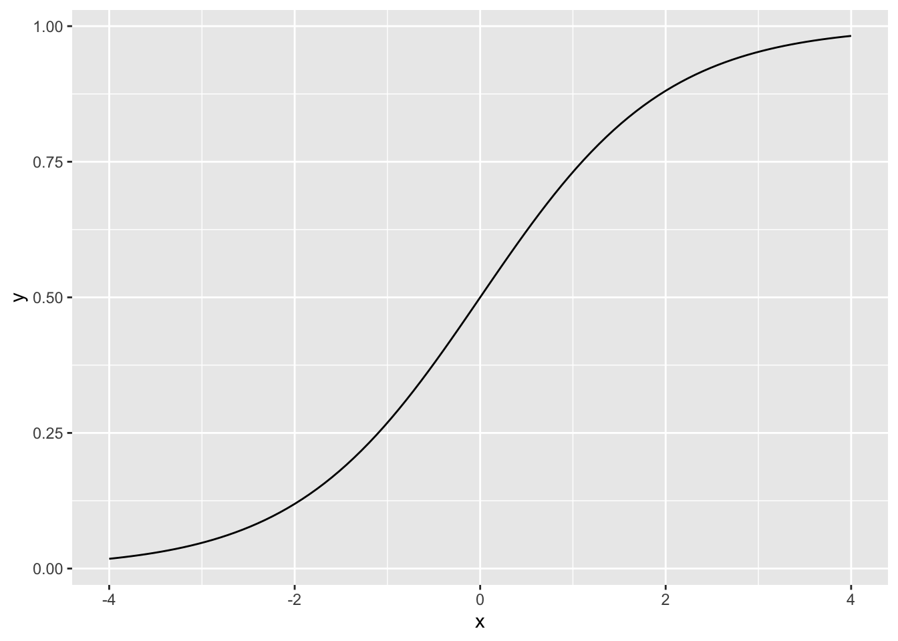
To finish specifying the Logistic model we just need to establish a reasonable link function that connects \(\eta\) to \(p\). There are a variety of options but the most commonly used is the logit function which is specified as:
\[logit(p) = \log\left(\frac{p}{1-p}\right),\text{ for $0\le p \le 1$}\]
We can specify t as a linear combination of our predictors (independent variables).
\[ t = \beta_0 + \beta_1 x \]
The logistic function can now be rewritten as:
\[ F\left( x \right) =\frac { 1 }{ 1+{ e }^{ -\left( { \beta }_{ 0 }+\beta _{ 1 }x \right) } } \]
Consider the following data set where we wish to predict whether a student will pass an exam based upon the number of hours they studied.2.
study <- data.frame(
Hours=c(0.50,0.75,1.00,1.25,1.50,1.75,1.75,2.00,2.25,2.50,2.75,3.00,
3.25,3.50,4.00,4.25,4.50,4.75,5.00,5.50),
Pass=c(0,0,0,0,0,0,1,0,1,0,1,0,1,0,1,1,1,1,1,1)
)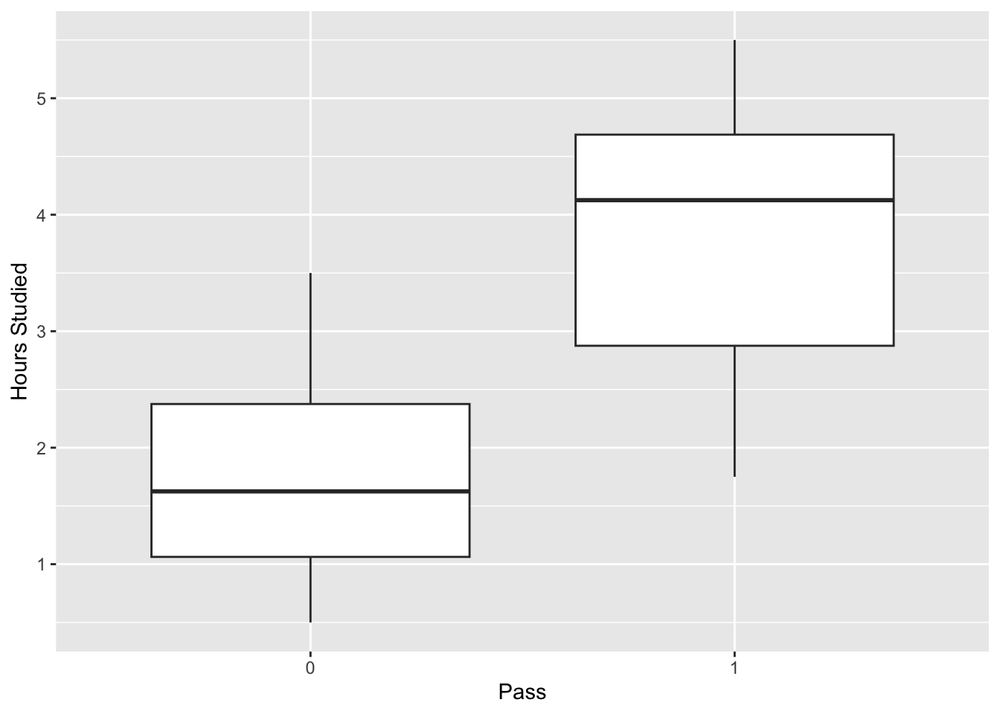
First, we need to define logit function and the log-likelihood function that will be used by the optim function. Instead of using the normal distribution as above (using the dnorm function), we are using a binomial distribution and the logit to link the linear combination of predictors.
logit <- function(x, beta0, beta1) {
return( 1 / (1 + exp(-beta0 - beta1 * x)) )
}
loglikelihood.binomial <- function(parameters, predictor, outcome) {
a <- parameters[1] # Intercept
b <- parameters[2] # beta coefficient
p <- logit(predictor, a, b)
ll <- sum( outcome * log(p) + (1 - outcome) * log(1 - p))
return(ll)
}Now we can call the optim function and get the final parameter estimates.
optim.binomial <- optim_save(
c(0, 1), # Initial values
loglikelihood.binomial,
method = "L-BFGS-B",
control = list(fnscale = -1),
predictor = study$Hours,
outcome = study$Pass
)In R, the glm (short for generalized linear models) function implements logistic regression when the family = binomial(link = 'logit') parameter is set. See ?glm for other families of models to estimate models with other underlying distributions. We can see that our estimate matches the results of glm to a rounding error.
optim.binomial$par[1] -4.077575 1.504624lr.out <- glm(Pass ~ Hours, data = study, family = binomial(link = 'logit'))
lr.out$coefficients(Intercept) Hours
-4.077713 1.504645 # Redefine the logistic function to include parameter estimates
logistic <- function(x, beta0, beta1) {
return(1 / (1 + exp(-1 * (beta0 + beta1 * x)) ))
}
beta0 <- optim.binomial$par[1]
beta1 <- optim.binomial$par[2]
ggplot(study, aes(x = Hours, y = Pass)) +
geom_point(aes(color = logistic(Hours, beta0, beta1) > 0.5)) +
stat_function(fun = logistic, n = 101,
args = list(beta0 = beta0, beta1 = beta1) ) +
scale_color_hue('Predicted Pass > 0.5') +
theme(legend.position = 'inside', legend.position.inside = c(0.85, 0.15))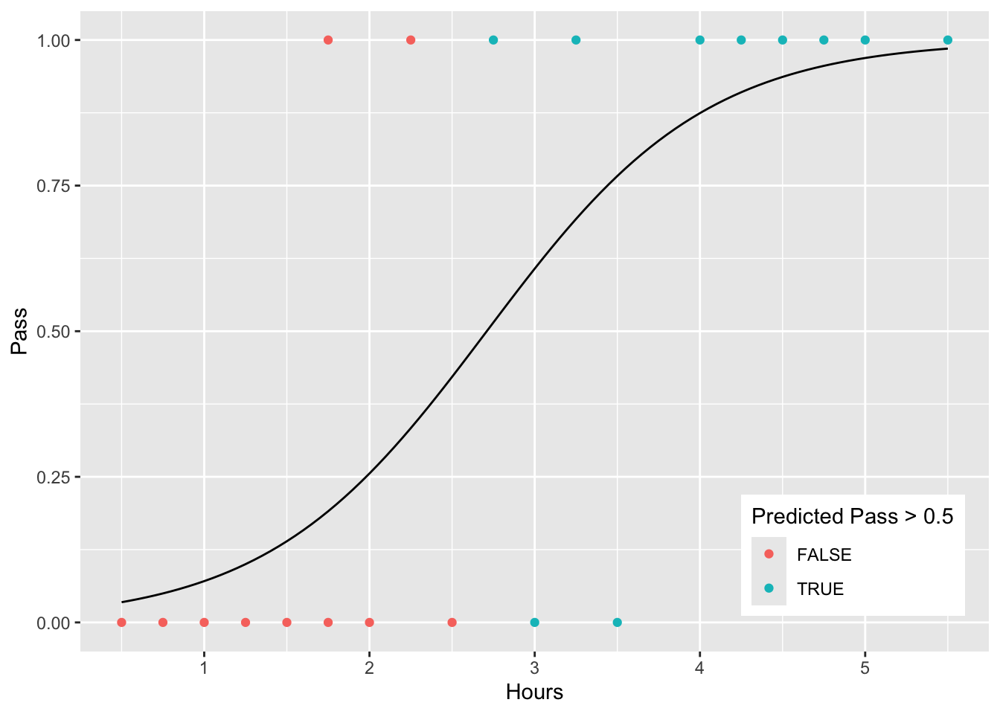
Let’s explore the process of the numeric optimizer. For this model, it took 70 iterations to converge to resulting parameters.
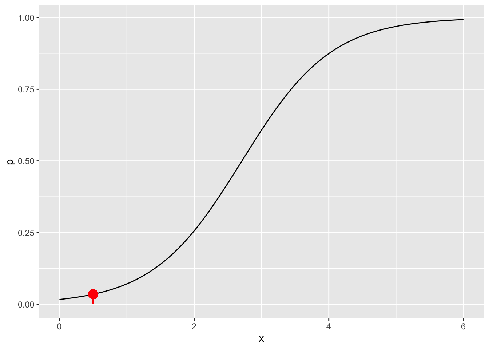

#| label: fig-shiny-variance
#| viewerHeight: 600
#| standalone: true
webr::install("mnormt")
webr::install("ggplot2")
webr::install("dplyr")
webr::install("psych")
webr::install("tidyr")
webr::install("cowplot")
webr::install("reshape2")
library(ggplot2)
library(dplyr)
library(psych)
library(tidyr)
library(cowplot)
library(reshape2)
source('https://raw.githubusercontent.com/jbryer/VisualStats/main/R/isBinary.R')
source('https://raw.githubusercontent.com/jbryer/VisualStats/main/R/optim_save.R')
source('https://raw.githubusercontent.com/jbryer/VisualStats/main/R/likelihood_normal.R')
source('https://raw.githubusercontent.com/jbryer/VisualStats/main/R/likelihood_binomial.R')
source('https://raw.githubusercontent.com/jbryer/VisualStats/main/R/variance_vis.R')
source('https://raw.githubusercontent.com/jbryer/VisualStats/main/R/mle_shiny.R')
shinyApp(ui = variance_shiny_ui, server = variance_shiny_server)This Shiny application can be run locally using the VisualStats::mle_shiny() function.
This function is available in the
VisualStatspackage.↩︎These data were retrived from the Wikipedia article on logistic regresion↩︎